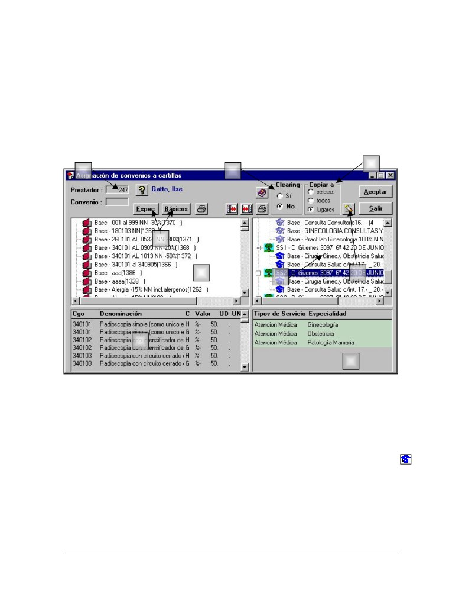
Infomedical S.A.
ASIGNACIÓN DE CONVENIOS A PRESTADORES
Una vez creados los convenios básicos y valorizados, se los debe asignar a cada prestador
adaptándolo a su situaciones particular.
Un prestador puede tener para una misma prestación más de un convenio de acuerdo con la cartilla
que tenga asignada y el lugar de atención. Pero en un mismo domicilio no podrá tener dos
convenios diferentes con la misma prestación.
Para asignar los convenios se debe ingresar en le opción Convenios / Asignación a cartilla del menú
principal. Allí se despliega la siguiente pantalla.
4
1
3
a
2
8
5
6
7
1. Prestador, se debe seleccionar el código de prestador sobre el cual se ha de trabajar. Si no se
conoce el numero de prestador se inicia la búsqueda en el sistema.
Αl oprimir los botones de convenios Básicos / Especiales (a) se despliegan a la izquierda el listado
de los convenios creados (2).
2. Se elige un convenio o se coloca el número correspondiente.
3. Clearing, se debe seleccionar si el convenio será aplicable al prestador con el concepto de
clearing. Si se selecciona la opción Si del lado derecho se visualizara el icono del convenio en
celeste.
4. Copiar a, se elige la opción de asignación entre:
• Todos, asigna el convenio en todas las cartillas desplegadas y sus lugares de atención.
• Selección, la asignación solo se efectúa a una cartilla determinada.
• Lugares, se asigna el convenio a todos los lugares de atención de una misma cartilla.
Presmed - Prohibida su reproducción total o parcial
14
Infomedical S.A.
5. Se arrastra el convenio a asignar de izquierda hacia la derecha a la Cartilla y lugar de atención
apropiado.
6. Haciendo doble click en los convenios de la izquierda, se despliega en la ventana inferior
izquierda las prestaciones valorizadas del convenio
7. Haciendo doble click en el lugar de atención correspondiente a la cartilla en la ventana derecha
se despliegan el Tipo de Servicio y Especialidad correspondiente a dicho lugar.
Una vez hecha la asignación de los convenio se debe oprimir el botón Aceptar para guardar los
cambios efectuados.
8. El sistema permite desasignar convenios de las cartillas marcando el que corresponde y
accionando el icono.
Una vez hecha la asignación de los convenio se debe oprimir el botón Aceptar para guardar los
cambios efectuados.
Presmed - Prohibida su reproducción total o parcial
15
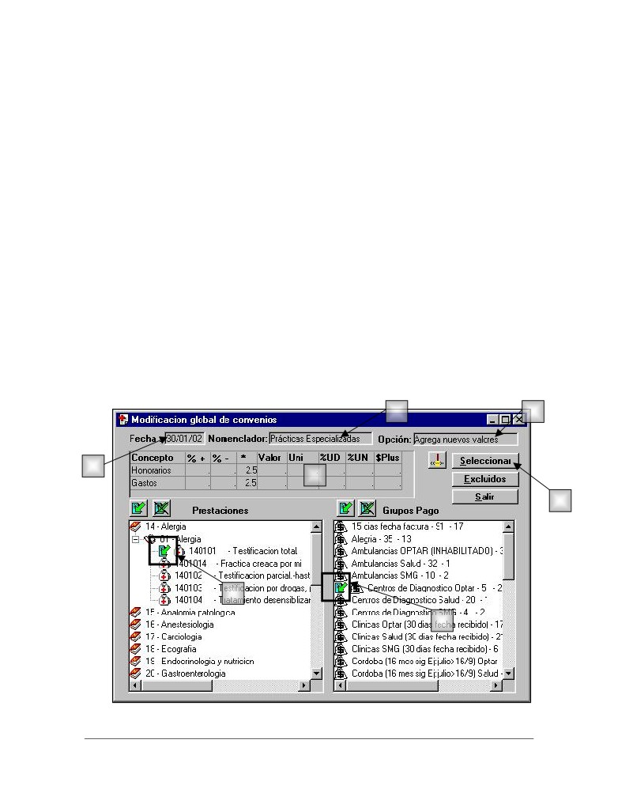
Infomedical S.A.
MODIFICACIÓN GLOBAL DE CONVENIOS
Esta opción es utilizada para agregar (en desarrollo), eliminar (en desarrollo) o modificar valores de
una prestación en uno o más convenios.
Esta opción solo podrá ser utilizada para los convenios propios. Para lo cual el sistema controla la
integridad de los datos de modo que si se agrega una prestación que ya existe en otro convenio
asignado a un prestador, detecta el error e informa en qué prestadores o convenios hay conflicto.
Advertencias de uso
Se recomienda su uso en los siguientes casos:
• Incorporación de una nueva prestación. (en desarrollo)
Por ejemplo: Una prestación no nomenclada recientemente incorporada. Deberá fijarse un
valor para cada conjunto de convenios homogéneos en dicho valor.
• Eliminación de un código de prestación en un convenio general. (en desarrollo)
Por ejemplo: Si se definió en radiología básica, estudios correspondientes a radiología
especializada, puede utilizarse la opción de Eliminar para corregirlo.
• Modificación del valor de una consulta para un grupo.
Modificación de los valores de convenios
Para efectuar esta operación se ingresa en la opción Convenios / Modificación global de convenios
donde se despliega la siguiente pantalla.
2
3
1
6
6
4
5
Presmed - Prohibida su reproducción total o parcial
16
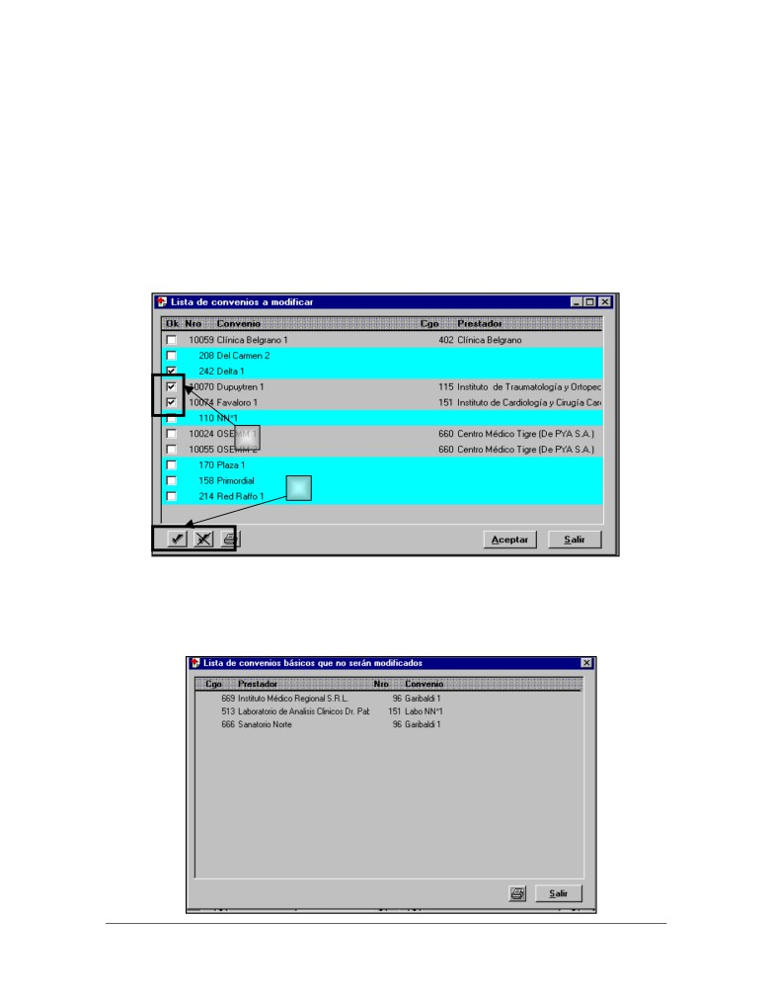
Infomedical S.A.
1. Fecha, de entrada en vigencia de los nuevos valores.
2. Nomenclador, seleccionar sobre el cual se quiere hacer el cambio.
3. Opción, seleccionar correspondiente.
4. Prestación, seleccionar con el botón derecho del mouse las prestaciones a las que se le
modificara el precio.
5. Grupo de pago, seleccionar con el botón derecho del mouse el grupo de pago afectado.
6. Valores, colocar los nuevos valores o los porcentajes o lo que corresponda modificar.
7. Al presionar el botón Seleccionar aparecerá la siguiente pantalla.
a
b
• Se marcan los convenios a modificar, (a) la selección a través de éstos íconos se podrá
relizar en forma masiva (b) como así también la desmarcación de los mismos.
Al accionar éste ícono aparecerá la siguiente pantalla donde se mostrarán los convenios que quedan
excluidos de esa modificación.
Presmed - Prohibida su reproducción total o parcial
17
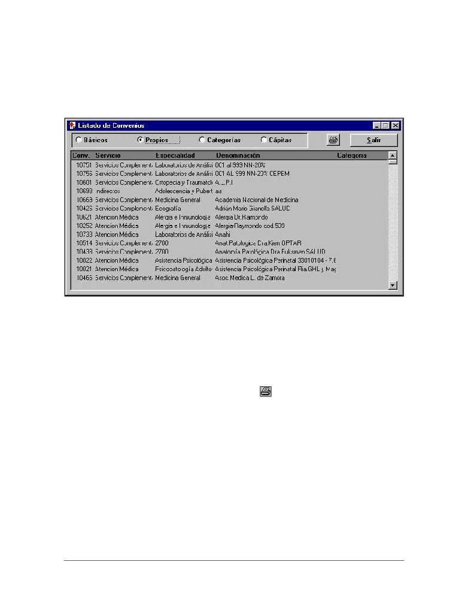
Infomedical S.A.
INFORMES DE CONVENIOS
Lista de convenios
Despliega los convenios existentes en el sistema agrupados según los tipos Básicos, Propios,
Categorías, Cápita.
En el listado se visualiza:
• Código de Convenio
• Servicio
• Especialidad
• Denominación
• Tipo
También es posible imprimirlo, con solo oprimir el icono
Presmed - Prohibida su reproducción total o parcial
18
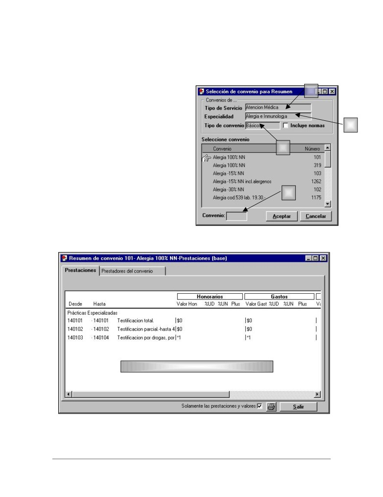
Infomedical S.A.
Resumen de Convenio
A través de esta opción del menú se puede acceder a la vista resumida de un convenio. Para ello se
debe:
Se selecciona:
1
1. Tipo de Servicio
2. Especialidad
3. Tipo de Convenio (Se puede seleccionar
2
si se desean ver las normas asociadas al
convenio)
3
Una vez seleccionadas las distintas opciones de
búsqueda se despliegan los convenios en la
ventana inferior.
Haciendo doble click con el botón izquierdo del
mouse sobre el convenio que se quiere ver o
4
colocando el número de convenio
(4) y
oprimiendo el botón Aceptar el sistema
desplegará el resumen del convenio y los
prestadores que tienen asociado ese convenio.
Detalle
de
prestaciones con sus valores
convenidos
Presmed - Prohibida su reproducción total o parcial
19
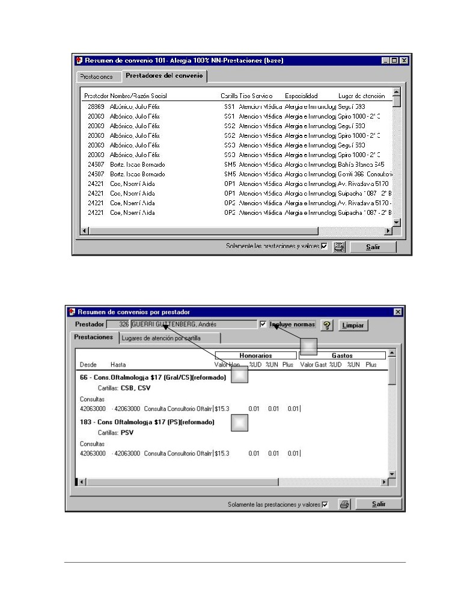
Infomedical S.A.
Resumen de convenios por prestador
Desde esta opción se pueden ver los convenios que tienen asociados cada prestador.
b
a
c
Para ello es necesario indicar el prestador que se quiere consultar (a) y si se desean ver las normas
asociadas a los convenios (b)
Presmed - Prohibida su reproducción total o parcial
20
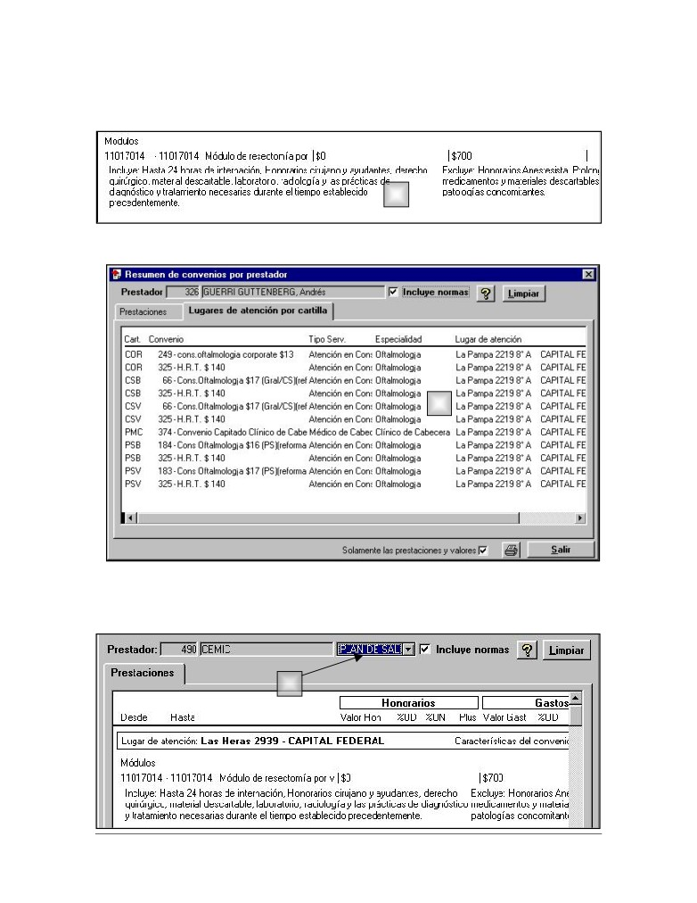
Infomedical S.A.
El sistema traerá el o los resúmenes de los convenios (c) correspondiente a ese prestador incluyendo
los distintos valores cargados y las normas (d) de los códigos.
d
Así mismo se mostraran los lugares de atención del prestador y los convenios asociados a cada uno
de ellos (e).
e
Resumen de convenio unificado
Este informe muestra la misma información que el anterior con la diferencia que para generarlo es
necesario elegir una única cartilla (a)
a
Presmed - Prohibida su reproducción total o parcial
21
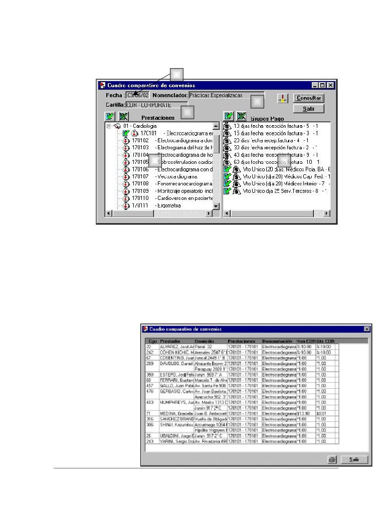
Infomedical S.A.
Cuadro comparativo de convenios
Este informe permite visualizar los valores de las prestaciones comparando los distintos
prestadores.
1
2
3
4
5
Para ello es
necesario indicar:
1. Fecha para la que se quiere conocer los valores de las prestaciones (dado que se consulta
directamente sobre los convenios y estos pueden tener distintos valores según sea su
vigencia)
2. Un nomenclador para que se desplieguen los códigos de prestaciones.
3. Una cartilla para así relacionar la búsqueda a los prestadores y sus convenios.
Una vez seleccionados estos datos se eligen las prestaciones a visualizar (4) clickeando con el botón
derecho del mouse sobre ellas.
Lo mismo debe hacerse con los grupos de pago de los prestadores (5)
Luego se oprime el botón
Consultar, y aparecerá el
siguiente reporte donde se
reflejarán
comparativamente los
diferentes valores
convenidos de los
nomencladores
seleccionados en la pantalla
anterior.
Presmed - Prohibida su reproducción total o parcial
22
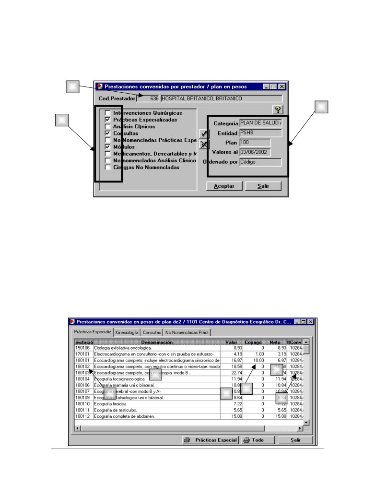
Infomedical S.A.
Prestaciones convenidas por prestador y Plan
En este informe se despliega el detalle, prestación por prestación de su valor de acuerdo a los
convenios asignados.
1
3
2
Para visualizarlo es preciso indicar:
1. Prestador que se quiere consultar.
2. Se marcan los nomencladores que se quieren consultar.
3. Se utilizan los filtros de:
• Categoría (solo para círculos médicos)
• Entidad
• Lugar de atención
• Plan
• Fecha a la que se requiere visualizar los valores
• Forma de ordenamiento (Por código, por nomenclador / código, por Denominación)
5
2
4
1
3
7
Presmed - Prohibida su reproducción total o parcial
23
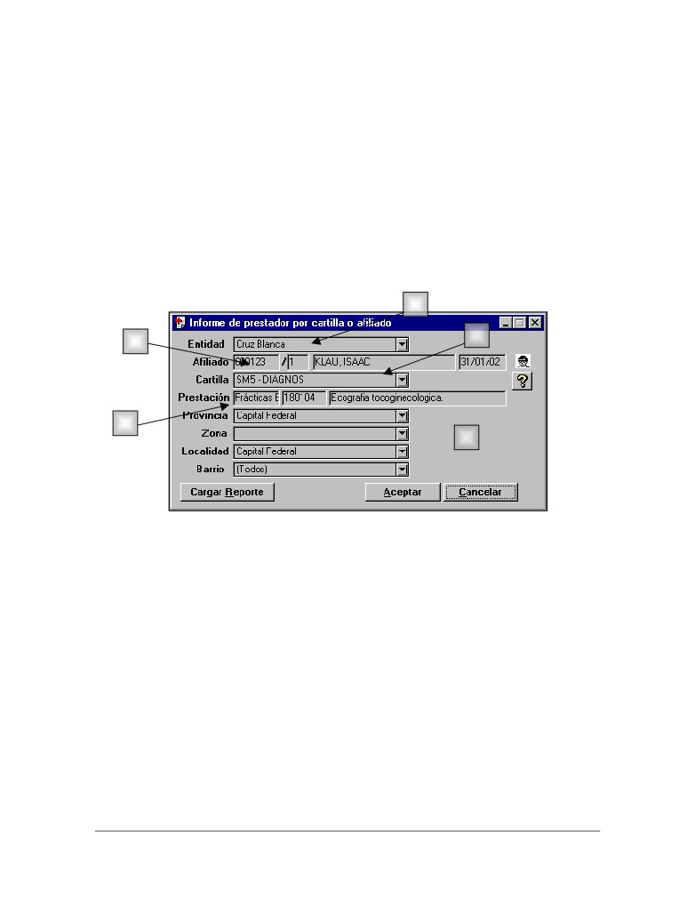
Infomedical S.A.
En cada solapa se visualiza un nomenclador y dentro de este los datos de:
1. Código de prestación
2. Denominación
3. Valor de la prestación
4. Copago
5. Valor neto (Surge de restarle al importe de la Prestación el valor del copago)
6. Numero de convenio de donde se obtienen los datos.
Prestadores por zona para afiliado y prestación
Despliega los prestadores que realizan una prestación determinada en una localización geográfica
para la cobertura de un afiliado.
1
3
2
4
5
Para poder visualizar los datos de este informe es necesario indicar:
1. Εntidad.
2. Afiliado (opcional).
3. Cartilla (al indicar el afiliado automáticamente selecciona la cartilla que le corresponde al
plan)
4. Prestación.
5. Localización de los prestadores
• Provincia
• Zona
• Localidad
• Barrio (solo para Capital federal)
Una vez seleccionados estos datos el sistema emite un reporte informando el prestador y el lugar de
la atención donde se efectúa la prestación antes seleccionada.
Presmed - Prohibida su reproducción total o parcial
24
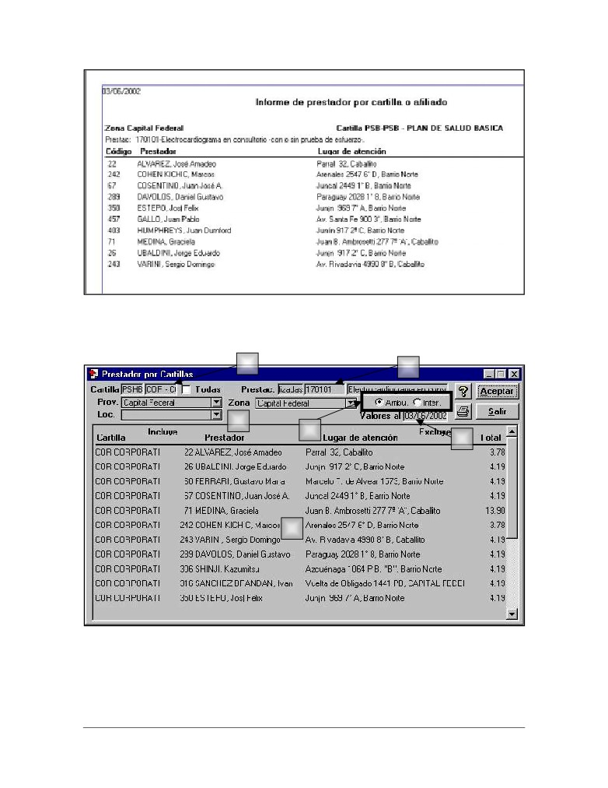
Infomedical S.A.
Prestador por Cartillas
Este informe muestra los valores acordados con cada prestador en una cartilla determinada y para
una prestación en particular.
1
3
2
4
5
6
Los datos a seleccionar son:
1. Una entidad con su cartilla o todas las cartillas.
2. Provincia y Localidad o Zona de los prestadores a consultar.
3. Prestación que se quiere analizar.
Presmed - Prohibida su reproducción total o parcial
25
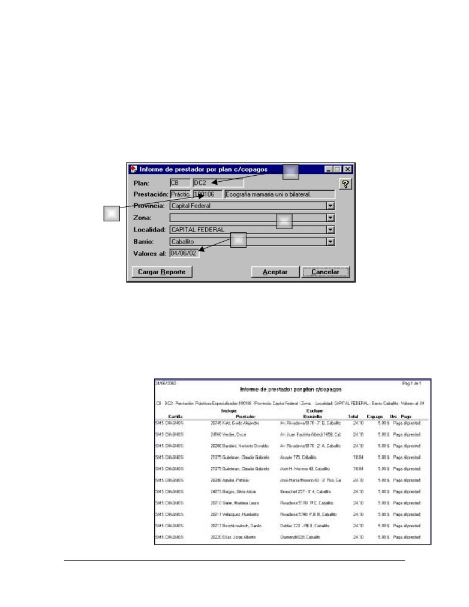
Infomedical S.A.
4. Indicar si es ambulatorio o internación.
5. Fecha de vigencia para los valores
Luego de haber seleccionado los datos antes descriptos se oprime el botón Aceptar. En la parte
inferior de la pantalla (6) se verán los datos de aquellos prestadores que efectúan la prestación
seleccionada y el valor de la mismo.
Informe de prestador por plan c/copagos
Este informe permite ver los prestadores que efectúan una cierta prestación y el copago que se
abona por ella.
1
2
3
4
Los datos a seleccionar son:
1. Entidad y el plan que se quiera consultar
2. La prestación a buscar.
3. Provincia y localidad (Barrio solo en caso de Capital Federal) o zona.
4. Valores a la fecha que se desea hacer la consulta.
Al presionar el botón Aceptar el sistema brindará el siguiente reporte:
El reporte muestra el
número de prestador,
domicilio, valor de la
prestación enunciada en
la pantalla anterior,
valor del copago y la
opción de pago del
mismo que se marcó en
la configuración del
plan.
Presmed - Prohibida su reproducción total o parcial
26